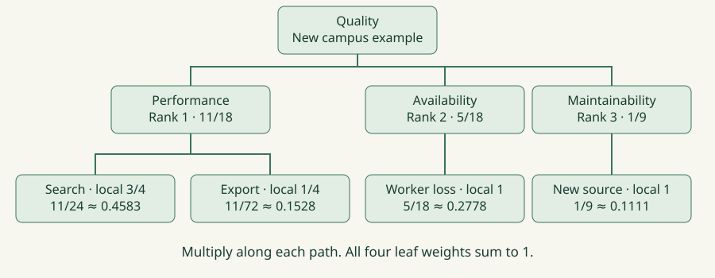

Build a quality tree, prioritize with rank-order-centroid weights, assess alternatives, and defend a decision with evidence and sensitivity analysis.
Quality-Oriented Decision Analysis (QODA) is Jeromy’s lightweight method for making architectural decisions informed, shared and durable, while allowing deliberate revision. A technology choice becomes an architectural decision when it commits a system to consequential tradeoffs. Jeromy’s approach begins by making the context explicit: whose problem is being solved, what outcomes matter, which constraints apply, and what future changes are plausible. A favorite product is not a substitute for this definition.
The lecture uses a data-querying example at Datadog, where diverse kinds of data and different storage systems make a unified query experience difficult. Keep that as the motivation for the method, rather than assuming any historical product comparison remains a current recommendation.
New worked example used throughout this unit: a campus information service must search course data, export records, survive worker failures, and integrate new data sources. Alternative A is a tailored service; B is a shared platform. Before comparing them, record stakeholders, workload, operating limits, and non-negotiable constraints. The example’s targets and scores are teaching assumptions.
No. They may value latency, incident recovery, development effort or cost differently. Name those priorities and the circumstances in which each matters before comparing products.
A scenario gives a quality claim a concrete meaning. The lecture uses context, stimulus and response: the conditions in force, the event that occurs, and the result the system must produce. Make the response measurable where possible. A scenario can concern normal execution, failure, or a development change.
Facilitate the process with stakeholders. Jeromy describes agreeing on context, inviting participants to brainstorm scenarios, refining vague statements, and then clustering the resulting scenarios into a quality tree. This bottom-up collection helps expose concerns that a preselected taxonomy or a product-led debate might miss.
For the campus example, Search means: at 200 requests/second on a specified representative dataset, a user issues a search and p95 latency is at most 250 ms during a defined test window. Export means: an authorized user requests 10,000 records and receives a complete export within eight seconds. Specify hardware, data size and concurrency in an actual evaluation.
Worker loss means: during a request, one serving worker terminates and the request completes correctly within two seconds. New source means: with the platform in production, the team integrates a new catalog source and produces a tested adapter within three engineer-days. These are new scenarios, not copied lecture questions. Check data correctness and authorization as well as timing.
Agree on how evidence will be collected for every scenario: a load test, a fault-injection experiment, a prototype integration, or a justified analysis. A threshold without a test context is not yet a reproducible requirement.
False. State the change, starting context and measurable effort or outcome. For example, adding a specified source through a documented adapter within three engineer-days, with existing tests still passing.

A quality tree organizes the meaning of success. Its upper nodes are qualities such as performance, availability and maintainability. Lower nodes refine those qualities, and concrete scenarios sit at the leaves. The lecture’s larger tree also illustrates operational and reliability concerns; choose a tree suited to the system rather than treating one taxonomy as universal.
Our compact worked tree has Performance → Search and Export; Availability → Worker loss; Maintainability → New source. The two performance leaves make a tradeoff inside that branch visible. Availability and Maintainability each have one leaf in this teaching example.
Rank only children of the same parent. Ranking Availability against Performance is one conversation; ranking Search against Export is another. Do not mix a top-level quality with a scenario several levels below it. Record the rationale for each ordering and involve the people who bear the consequences.
Check coverage before calculating. Missing a security requirement or representing latency with many near-duplicate scenarios can distort the decision. Mandatory requirements should be recorded explicitly. A high weighted total cannot justify violating a requirement that stakeholders have declared non-negotiable.
Delay advocacy for particular solutions until the criteria and priorities are established. QODA borrows scenario thinking from ATAM, but the lecture presents it as a lightweight decision exercise, not as a complete execution of ATAM.
No. The top-level allocation is determined by sibling priorities. Leaf weights subdivide their parent’s allocation. Carefully avoid redundant leaves that double-count the same concern.
Jeromy uses rank-order-centroid, abbreviated ROC, to turn an ordered set of siblings into weights. For N children and rank k, where 1 is highest priority, w(k) = (1/N) × Σ from i=k to N of (1/i). Each sibling set receives positive weights that sum to one. This is a rule for translating an ordering, not a measurement of how many times one stakeholder value exceeds another.
With three ranked qualities, w(1) = (1 + 1/2 + 1/3)/3 = 11/18 ≈ 0.6111; w(2) = (1/2 + 1/3)/3 = 5/18 ≈ 0.2778; and w(3) = (1/3)/3 = 1/9 ≈ 0.1111. If Performance ranks first, Availability second and Maintainability third, assign those values respectively.
For two siblings the weights are 0.75 and 0.25. Thus Search above Export receives 0.75 and 0.25 within Performance. A node with one child gives it weight 1. Compute weights independently at every branching node; do not reuse the three-child numbers for a two-child branch.
The lecture uses stack rankings. If stakeholders cannot agree on an ordering, capture the disagreement and compare alternative rankings. Do not silently invent a tie-breaking convention or claim that the resulting decimal values remove subjective judgment.
No. They are 11/18, 5/18 and 1/9, approximately 0.6111, 0.2778 and 0.1111. Apply the stated formula rather than substituting intuitive percentages.
The combined weight of a scenario is the product of all local weights on its root-to-leaf path. Do not add the weights. The parent allocates a share of the total, and each descendant allocates a share of that share.
Using the worked tree: Search = (11/18) × (3/4) = 11/24 ≈ 0.4583. Export = (11/18) × (1/4) = 11/72 ≈ 0.1528. Worker loss = (5/18) × 1 ≈ 0.2778. New source = (1/9) × 1 ≈ 0.1111. The four leaf weights sum to one, and the two performance leaves sum to 11/18.
A deeper tree works the same way. If a Performance → Latency branch has local weight 0.6111 and a particular latency scenario has local weight 0.75, multiply those by the top-level Performance weight as well. Omitting an intermediate level changes the meaning of the allocation.
Useful checks are local sibling sums, complete path products and the total over all leaves. If the model includes branches with no assessed scenarios, disclose the uncovered weight. Do not silently renormalize the covered leaves and pretend the original decision criteria were fully evaluated.
No. Multiply: approximately 0.4583. Addition would not preserve the parent’s allocation and could produce a total above one.
For each alternative–scenario pair, assess how well the design satisfies that scenario. Jeromy illustrates Poor, Fair, Good and Excellent mapped to 0, 1, 2 and 3. Define consistent anchors and record evidence. For a timing target, Good might mean the agreed target is demonstrated; other ratings need equally explicit meanings. A prototype result, an analysis and an untested assertion do not offer the same confidence.
New hypothetical score matrix, ordered Search / Export / Worker loss / New source: A = [3, 2, 1, 0]; B = [1, 2, 3, 3]. These ratings are invented for the exercise and are not assessments of real products. The total is Σ(scenario weight × rating). A = 0.4583×3 + 0.1528×2 + 0.2778×1 + 0.1111×0 ≈ 1.9583. B ≈ 1.9306, using unrounded weights.
A leads by only about 0.0278 on the 0–3 scale. That small difference should prompt investigation of uncertain ratings rather than a claim of scientific certainty. The model assumes the rating numbers can be used additively; it makes tradeoffs inspectable but does not establish objective utility.
Missing evidence is not the same as Poor. Leave an unknown visible and gather evidence before presenting a complete ranking. Also test hard constraints separately: if Worker loss must score at least Good, A is ineligible in this example even though it has the higher unconstrained weighted total.
The lecture deliberately uses four rating categories with no neutral midpoint. The lab’s Unknown state is an added evidence-tracking safeguard, not a fifth numeric rating in Jeromy’s scale. Gather evidence before replacing it with a supported assessment.
No. Apply the mandatory requirement as a feasibility check. Weighted scores support tradeoffs among eligible choices; they do not override a declared hard constraint.
Change an assumption deliberately and recalculate. If Availability becomes first and Performance second, with Maintainability still third, the top-level weights become 0.6111 for Availability, 0.2778 for Performance and 0.1111 for Maintainability. Search and Export keep their local ordering but receive smaller combined shares.
Under that new ordering, the same score matrix gives A ≈ 1.3750 and B ≈ 2.5139. The preferred alternative changes because stakeholder priorities changed, not because the arithmetic was inconsistent. Explain that causal chain in a recommendation.
Also vary uncertain ratings. In the original ordering, reducing A’s Search rating from 3 to 2 lowers its total by about 0.4583, easily reversing the narrow lead. This identifies where a prototype or benchmark may be valuable. Sensitivity analysis asks whether the conclusion survives plausible changes, not how to tune the inputs until a favorite wins.
The lecture emphasizes revisiting the framework during planning cycles as business priorities and technologies change. Retain the scenarios, rankings, evidence and rationale so the team can update the decision without reconstructing every discussion. Add new alternatives or scenarios when justified.
No. A preference-sensitive method should respond to a real priority change. Report which assumption changed and whether uncertainty makes the recommendation fragile.
Jeromy extends the same framework to technical debt. A deliberate shortcut can buy delivery time by accepting lower quality in specific scenarios. The time saved is the benefit obtained; the obligation is the gap between the desired and actual quality of the system. Repayment effort need not equal the effort initially saved.
New example: a team ships a fixed-format importer in two weeks instead of spending six weeks on a general adapter framework. It gains four weeks now, but the actual system performs poorly on a future “add a source” scenario. Later integrations, changed code and new requirements may make closing that gap more or less expensive than four weeks.
Compare the actual design and a desired design against the same current scenario tree. Inspect weighted per-scenario gaps to locate the important deficiencies, then estimate the work and risk of addressing them. Do not confuse a quality-score difference with engineer-days; the score helps prioritize investigation, while the effort estimate comes from engineering analysis.
The target can change over time. If new-source integration becomes central to the business, its quality gap matters more. If the system is retired, that particular investment may no longer have value. Document the shortcut, affected scenarios, intended benefit, current consequences, and a review trigger. The lecture does not establish a fixed interest-rate formula for technical debt.
No. What remains is a quality gap, and the system and its requirements may change. Estimate the current effort to close the relevant gap rather than equating it with the original time saving.
Your deliverable is a defensible decision record: decision and context; stakeholders and hard constraints; quality tree; concrete scenarios; sibling rankings and rationales; ROC calculations and path products; alternative-by-scenario ratings with evidence; weighted comparison; sensitivity checks; recommendation and review triggers.
Use the interactive lab to reproduce the worked example. First predict the winner, then calculate. Change the top-level order, test an unknown rating, and activate the hard recovery constraint. For each change, write one sentence explaining why the recommendation changes or why the comparison becomes incomplete.
Independent exercise: evaluate two notification architectures for a campus safety service. Create your own contexts, stimuli and responses for urgent delivery, failure behavior, and adding a new channel. Use at least one two-level branch, compute ROC path weights, and compare two alternatives using stated hypothetical evidence. Do not reuse the Search/Export scores as if they were measurements.
Mastery means explaining the reasoning behind every cell. A correct spreadsheet with vague scenarios, hidden missing evidence or post-hoc priorities is not a sound architectural evaluation. A strong answer makes disagreement visible and proposes the next experiment that could change the decision.
The scenario definitions, tree paths, sibling rankings, weight calculations, rating evidence, constraints and sensitivity checks. A total without this trail is not an adequate decision record.
Context, stimulus and response. Make the response observable and specify enough workload and environment detail to support a meaningful assessment.
Compute ROC weights among siblings at each node, then multiply the local weights along each root-to-leaf path. Check sibling sums and complete leaf coverage.
The ranking depends on priorities, rating anchors, evidence and additive-model assumptions. Missing evidence, mandatory constraints and sensitivity may require further work or exclude a candidate.
Create a quality tree and evaluate two architectures for campus safety notifications. Include one hard constraint, four scenarios, a complete ROC calculation, evidence-backed or explicitly hypothetical ratings, and one priority-change analysis.
An adequate response defines stakeholders and testable scenarios; ranks siblings; computes local weights and path products; assesses identical scenarios for both candidates; distinguishes unknowns and hard constraints; calculates totals; and explains the effect of a plausible change. Alternative designs are acceptable when the reasoning and evidence are explicit.
Source review and clarifications
Questions-only worksheet · Worked answer sheet
Reliability is ranked second among three top-level qualities. Within Reliability, recovery is ranked first among two children. What combined ROC weight does the recovery scenario receive if it is the only leaf below that child?
Best answer: C.
5/24 ≈ 0.2083.
The rank-2-of-3 weight is (1/2 + 1/3)/3 = 5/18. Rank-1-of-2 is (1 + 1/2)/2 = 3/4. The path product is 5/18 × 3/4 × 1 = 5/24.
A decision has three scenario leaves ranked Recovery, Latency, Integration. Use ROC weights for this flat tree. Candidate C has ratings [3,1,0]; D has [1,2,3]. Compute the totals, then swap the priorities of Recovery and Latency while keeping each candidate’s ratings attached to the same scenarios. Which candidate leads in each case?
Initially C = 38/18 ≈ 2.1111 and D = 27/18 = 1.5000. After swapping priorities, C = 26/18 ≈ 1.4444 and D = 33/18 ≈ 1.8333. C leads first; D leads after the swap.
This is sensitivity to stakeholder priorities. The ratings have not changed. A sound recommendation states the priority assumptions and records why the stakeholder ordering is justified.
A team saves five weeks by omitting plugin support. Today the current design scores 0 and the desired design scores 3 on “add a new source”; its combined weight is 0.20. Other scenario ratings are equal. What is the weighted quality gap? Does this establish five weeks of repayment effort? What changes if the feature is no longer needed?
The weighted gap is 0.20 × (3 − 0) = 0.60 on this scoring scale. It does not establish repayment effort. Estimate implementation and migration work now. If the feature loses business value, revisit the scenario and priorities; this particular gap may no longer justify investment.
Technical debt concerns a quality shortfall in context. A score is not measured in weeks, and desired quality can change.